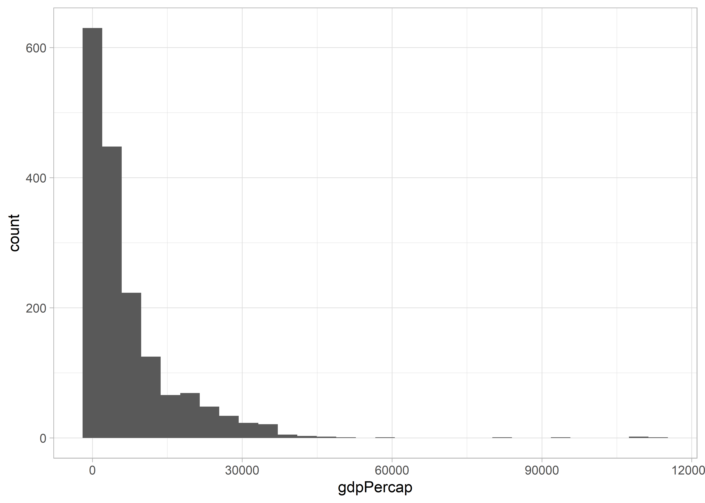

13 Függelék
13.1 Az R és az RStudio használata
Az R egy programozási nyelv, amely alkalmas statisztikai számítások elvégzésére és ezek eredményeinek grafikus megjelenítésére. Az R ingyenes, nyílt forráskódú szoftver, mely telepíthető mind Windows, mind Linux, mind MacOS operációs rendszerek alatt az alábbi oldalról: https://cran.r-project.org/ Az RStudio az R integrált fejlesztői környezete (integrated development environment, IDE), mely egy olyan felhasználóbarát felületet biztosít, ami egyszerűbb és átláthatóbb munkát tesz lehetővé. Az RStudio az alábbi oldalról tölthető le: https://rstudio.com/products/rstudio/download/
A „point and click” szoftverekkel szemben az R használata során scripteket kell írni, ami bizonyos programozási jártasságot feltételez, de a későbbiekben lehetővé teszi azt adott kutatási kérdéshez maximálisan illeszkedő kódok összeállítását, melyek segítségével az elemzések mások számára is megbízhatóan reprodukálhatók lesznek. Ugyancsak az R használata mellett szól, hogy komoly fejlesztői és felhasználói közösséggel rendelkezik, így a használat során felmerülő problémákra általában gyorsan megoldást találhatunk.
13.1.1 Az RStudio kezdőfelülete
Az RStudio kezdőfelülete négy panelből, eszközsorból és menüsorból áll:
Ábra 13.1: RStudio felhasználói felület
Az (1) editor ablak szolgál a kód beírására, futtatására és mentésére. A (2) console ablakban jelenik meg a lefuttatott kód és az eredmények. A jobb felső ablak (3) environment fülén láthatóak a memóriában tárolt adatállományok, változók és felhasználói függvények. A history fül mutatja a korábban lefuttatott utasításokat. A jobb alsó ablak (4) files fülén az aktuális munkakönyvtárban tárolt mappákat és fájlok találjuk, míg a plot fülön az elemzéseink során elkészített ábrák jelennek meg. A packages fülön frissíthetjük a meglévő r csomagokat és telepíthetünk újakat. A help fülön a különböző függvények, parancsok leírását, és használatát találjuk meg. A Tools -> Global Options menüpont végezhetjük el az RStudio testreszabását. Így például beállíthatjuk az ablaktér elrendezését (Pane layout), vagy a színvilágot (Appearance), illetve azt hogy a kódok ne fussanak ki az ablakból (Code -> Editing -> Soft wrap R source files).
13.1.2 A projektalapú munka
Bár nem kötelező, de javasolt, hogy az RStudio-ban projekt alapon dolgozzunk, mivel így az összes – az adott projekttel kapcsolatos fájlt – egy mappában tárolhatjuk. Új projekt beállítását a File->New Project menüben tehetjük meg, ahol a saját gépünk egy könyvtárát kell kiválasztani, ahová az R a scripteket, az adat- és előzményfájlokat menti. Ezenkívül a Tools->Global Options->General menüpont alatt le kell tiltani a „Restore most recently opened project at startup” és a „Restore .RData ino workspace at startup” beállítást, valamint „Save workspace to .RData on exit” legördülő menüjében be kell állítani a „Never” értéket.
Ábra 13.2: RStudio projekt beállítások

A szükséges beállítások után a File -> New Project menüben hozhatjuk létre a projektet. Itt arra is lehetőségünk van, hogy kiválasszuk, hogy a projektünket egy teljesen új könyvtárba, vagy egy meglévőbe kívánjuk menteni, esetleg egy meglévő projekt új verzióját szeretnénk létrehozni. Ha sikeresen létrehoztuk a projektet, az RStudio jobb felső sarkában látnunk kell annak nevét.
13.1.3 Scriptek szerkesztése, függvények használata
Új script a File -> New -> File -> R Script menüpontban hozható létre, mentésére a File->Save menüpontban egy korábbi script megnyitására File -> Open menüpontban van lehetőségünk. Script bármilyen szövegszerkesztővel írható, majd beilleszthető az editor ablakba. A scripteket érdemes magyarázatokkal (kommentekkel) ellátni, hogy a későbbiekben pontosan követhető legyen, hogy melyik parancs segítségével pontosan milyen lépéseket hajtottunk végre. A magyarázatokat vagy más néven kommenteket kettőskereszt (#) karakterrel vezetjük be.
A scriptbeli utasítások az azokat tartalmazó sorokra állva vagy több sort kijelölve a Run feliratra kattintva vagy a Ctrl+Enter billentyűparanccsal futtathatók le. A lefuttatott parancsok és azok eredményei ezután a bal alsó sarokban lévő console ablakban jelennek meg és ugyanitt kapunk hibaüzenetet is, ha valamilyen hibát vétettünk a script írása közben.
A munkafolyamat során létrehozott állományok (ábrák, fájlok) az ún. munkakönyvtárba (working directory) mentődnek. Az aktuális munkakönyvtár neve, elérési útja a getwd() utasítással jeleníthető meg. A könyvtárban található állományok listázására a list.files() utasítással van lehetőségünk. Ha a korábbiaktól eltérő munkakönyvtárat akarunk megadni, azt a setwd() függvénnyel tehetjük meg, ahol a ()-ben az adott mappa elérési útját kell megadnunk. Az elérési útban a meghajtó azonosítóját, majd a mappák, almappák nevét vagy egy normál irányú perjel (/), vagy két fordított perjel (\\) választja el, mivel az elérési út karakterlánc, ezért azt idézőjelek vagy aposztrófok közé kell tennünk.
Az aktuális munkakönyvtárba beléphetünk a jobb alsó ablak file lapján a „More -> Go To Working Directory” segítségével. Ugyanitt a „Set Working Directory”-val munkakönyvtárnak állíthatjuk be az a mappát, amelyben épp benne vagyunk.
Ábra 13.3: Working directory beállítások
A munkafolyamat befejezésére a q() vagy quit() függvénnyel van lehetőségünk. Az R-ben objektumokkal dolgozunk, amik a teljesség igénye nélkül lehetnek például egyszerű szám vektortok, vagy akár komplex listák, illetve függvények, ábrák. A munkafolyamat során létrehozott objektumokat az RStudio jobb felső ablakának environment fülén jelennek meg. A mentett objektumokat a fent látható seprű ikonra kattintva törölhetjük a memóriából. Az environment ablakra érdemes úgy gondolni hogy ott jelennek meg a memóriában tárolt értékek.
Az RStudio jobb alsó ablakának plots fülén láthatjuk azon parancsok eredményét, melyek kimenete valamilyen ábra. A packages fülnél a már telepített és a letölthető kiegészítő csomagokat jeleníthetjük meg. A help fülön a korábban említettek szerint a súgó érhető el. Az RStudio-ban használható billentyűparancsok teljes listáját Alt+Shift+K billentyűkombinációval tekinthetjük meg. Néhány gyakrabban használt, hasznos billentyűparancs:
Ctrl+Enter: futtassa a kódot az aktuális sorbanCtrl+Alt+B: futtassa a kódot az elejétől az aktuális sorigCtrl+Alt+E: futtassa a kódot az aktuális sortól a forrásfájl végéigCtrl+D: törölje az aktuális sort
Az R-ben beépített függvények (function) állnak rendelkezésünkre a számítások végrehajtására, emellett több csomag (package) is letölthető, amelyek különböző függvényeket tartalmaznak. A függvények a következőképpen épülnek fel: függvénynév(paraméter). Például tartalom képernyőre való kiíratását a print() függvénnyel tehetjük, amelynek gömbölyű zárójelekkel határolt részébe írhatjuk a megjelenítendő szöveget. A citation() függvénnyel lekérdezhetjük az egyes beépített csomagokra való hivatkozást is: a citation(quanteda) függvény a quanteda csomag hivatkozását adja meg.
Az R súgórendszere a help.start() utasítással indítható el. Egy adott függvényre vonatkozó súgórészlet a függvények neve elé kérdőjel írásával, vagy a help() argumentumába a kérdéses függvény nevének beírásával jeleníthető meg (pl.: help(sum)).
13.1.4 R csomagok
Az R-ben telepíthetők kiegészítő csomagok (packages), amelyek alapértelmezetten el nem érhető algoritmusokat, függvényeket tartalmaznak. A csomagok saját dokumentációval rendelkeznek, amelyeket fel kell tüntetni a használatukkal készült publikációink hivatkozáslistájában. A csomagok telepítésre több lehetőségünk is van: használhatjuk a menüsor Tools -> Install Packages menüpontját, vagy a jobb alsó ablak packages fül Install menüpontját, illetve az editor ablakban az install.packages() parancsot futtatva, ahol a ()-be a telepíteni kívánt csomag nevét kell beírnunk (pl.: install.packages("dplyr")). Ahhoz, hogy egy csomag funkcióit használjuk azt be kell töltetnünk a library() parancs segítségével, itt megintcsak a használni kívánt csomag nevét kell a zárójelek közé helyeznünk, viszont ebben az esetben nem szükséges idézőjelek közé helyeznünk zat (pl.: library(dplyr)) ameddig ezt a parancsot nem futattjuk le az adott csomag funkció nem lesznek elérhetőek számunkra.
Ábra 13.4: Packages fül
13.1.5 Objektumok tárolása, értékadás {object}
Az objektumok lehetnek például vektorok, mátrixok, tömbök (array), adat táblák (data frame). Értékadás nélkül az R csak megjeleníti a műveletek eredményét, de nem tárolja el azokat. Az eredmények eltárolásához azokat egy objektumba kell elmentenünk. Ehhez meg kell adnunk az objektum nevét majd az <- után adjuk meg annak értékét: a <- 12 + 3.Futtatás után az environments fülön megjelenik az a objektum, melynek értéke 15. Az objektumok elnevezésénél figyelnünk kell arra, hogy az R különbséget tesz a kis és nagybetűk között, valamint, hogy az ugyanolyan nevű objektumokat kérdés nélkül felülírja és ezt a felülírást nem lehet visszavonni.
13.1.6 Vektorok {vector}
Az R-ben kétféle típusú vektort különböztetünk meg:
- atomi vektor (atomic vector)
- lista (list)
Az atomi vektornak hat típusa van, logikai (logical), egész szám (integer), természetes szám (double), karakter (character), komplex szám (complex) és nyers adat (raw). A leggyakrabban valamilyen numerikus, logikai vagy karakter vektorral használjuk. Az egyedüli vektorok onnan kapták a nevüket hogy csak egy féle adattípust tudnak tárolni. A listák ezzel szemben gyakorlatilag bármit tudnak tárolni, akár több listát is egybeágyazhatunk.
A vektorok és listák azok az építőelemek amikből felépülnek az R objektumaink. Több érték vagy azonos típusú objektum összefűzését a c() függvénnyel végezhetjük el. A lenti példában három különböző objektumot kreálunk, egy numerikusat, egy karaktert és egy logikait. A karakter vektorban az elemeket időzőjellel és vesszővel szeparáljuk. A logikai vektor csak TRUE, illetve FALSE értékeket tartalmazhat.
numerikus <- c(1,2,3,4,5)
karakter <- c("kutya","macska","ló")
logikai <- c(TRUE, TRUE, FALSE)A létrehozott vektorokkal különböző műveleteket végezhetünk el, például összeadhatjuk numerikus vektorainkat. Ebben az esetben az első vektor első eleme a második vektor első eleméhez adódik.
c(1:4) + c(10,20,30,40)
#> [1] 11 22 33 44A karaktervektorokat össze is fűzhetjük egymással. Példánkban egy új objektumot is létrehoztunk, ezért a jobb felső ablakban, az environment fülön láthatjuk, hogy a létrejött karakter_kombinalt objektum egy négy elemű (hosszúságú) karaktervektor (chr [1:4]), melynek elemei a "kutya","macska","ló","nyúl". Az objektumként tárolt vektorok tartalmát az adott sort lefuttatva írathatjuk ki a console ablakba. Ugyanezt megtehetjük print() függvény segítségével is, ahol a függvény arrgumentumában () az adott objektum nevét kell szerepeltetnünk.
karakter1 <- c("kutya","macska","ló")
karakter2 <-c("nyúl")
karakter_kombinalt <-c(karakter1, karakter2)
karakter_kombinalt
#> [1] "kutya" "macska" "ló" "nyúl"Ha egy vektorról szeretnénk megtudni, hogy milyen típusú azt a typeof() vagy a class() paranccsal tehetjük meg, ahol ()-ben az adott objektumként tárolt vektor nevét kell megadnunk: typeof(karakter1). A vektor hosszúságát (benne tárolt elemek száma vektorok esetén) a lenght() függvénnyel tudhatjuk meg.
typeof(karakter1)
#> [1] "character"
length(karakter1)
#> [1] 313.1.7 Faktorok
A faktorok a kategórikus adatok tárolására szolgálnak. Faktor típusú változó a factor() függvénnyel hozható létre. A faktor szintjeit (igen, semleges, nem), a levels() függvénnyel kaphatjuk meg míg az adatok címkéit (tehát a kapott válaszok számát), a labels() paranccsal érhetjük el.
survey_response <- factor(c("igen", "semleges", "nem", "semleges", "nem", "nem", "igen"), ordered = TRUE)
levels(survey_response)
#> [1] "igen" "nem" "semleges"
labels(survey_response)
#> [1] "1" "2" "3" "4" "5" "6" "7"13.1.8 Data frame
Az adattábla (data frame) a statisztikai és adatelemzési folyamatok egyik leggyakrabban használt adattárolási formája. Egy data frame többféle típusú adatot tartalmazhat. A data frame-k különféle oszlopokból állhatnak, amelyek különféle típusú adatokat tartalmazhatnak, de egy oszlop csak egy típusú adatból állhat. Az itt bemutatott data frame 7 megfigyelést és 4 féle változót tartalmaz (id, country, pop, continent).
#> id orszag nepesseg kontinens
#> 1 1 Thailand 68.7 Asia
#> 2 2 Norway 5.2 Europe
#> 3 3 North Korea 24.0 Asia
#> 4 4 Canada 47.8 North America
#> 5 5 Slovenia 2.0 Europe
#> 6 6 France 63.6 Europe
#> 7 7 Venezuela 31.6 South AmericaA data frame-be rendezett adatokhoz különböző módon férhetünk hozzá, például a data frame nevének majd []-ben a kívánt sor megadásával, kiírathatjuk a console ablakba annak tetszőleges sorát ás oszlopát: orszag_adatok[1, 1]. Az R több különböző módot kínál a data frame sorainak és oszlopainak eléréséhez. A [ általános használata: data_frame[sor, oszlop]. Egy másik megoldás a $ haszálata: data_frame$oszlop.
orszag_adatok[1, 4]
#> [1] Asia
#> Levels: Asia Europe North America South America
orszag_adatok$orszag
#> [1] "Thailand" "Norway" "North Korea" "Canada"
#> [5] "Slovenia" "France" "Venezuela"13.2 Munka saját adatokkal
Saját adatainkat legegyszerűbben a munkakönyvtárból (working directory) hívhatjuk be. A munkakönyvtár egy olyan mappa a számítógépünkön, amely közvetlenül kapcsolatban van az éppen megnyitott R scripttel vagy projekttel. Amennyiben nem határozzuk meg , hogy adatokat honnan szeretnénk behívni, akkor azokat mindig innen fogja megpróbálni betölteni az R. A getwd() parancs segítségével bármikor megtekinthetjük az aktuális munkakönyvtárunk helyét a számítógépünkön. Amennyiben szeretnénk beállítani egy új helyet a munkakönyvtárunknak akkor azt megtehetjük a setwd() paranccsal (pl.: setwd(C:/ User /Documents) illetve a menü rendszeren keresztül is van rá lehetőségünk Session -> Set Working Directory -> Choose Direcotry…. Az R-ben praktikus úgynevezett projektalapú munkával dolgozni. Létrehozhatunk egy új projektet a menü rendszerben File -> New Project… itt meg kell határoznunk a projekt fájl helyét. A projekt alapú munka előnye, hogy a a munkakönyvtár mindig ugyanabban a mappában található, ahol az R projekt fájl is, amely megkönnyíti a saját adatokkal való munkát.
Az egyes fájl formátumokat különböző parancsokkal tudjuk beolvasni. Egy txt esetében használhatjuk a read.txt() parancsot , ehhez a funkcióhoz nem kell csomagot betöltenünk, mivel az R alapverziója tartalmazza. Akárhányszor adatokat olvasunk be meg kell, hogy határozzuk az objektum nevét, amely tartalmazni fogja az adott fájl adatait (pl.: proba<-read.txt (proba.txt)). A csv (comma separated values) formátumú fájlok esetében használhatjuk a read.csv parancsot, amelyet szintén tartalmaz az R alapverziója, illetve használhatjuk a read_csv parancsot is, amelyet a readr csomag tartalmaz (pl.: proba <- read.csv(proba.csv)). Utóbbi használata ajánlott magyar nyelvű szöveget tartalmazó adatok esetében, mivel tapasztalataink szerint ez a parancs kezeli legjobban a különböző kódolási problémákat. Amennyiben Excel táblázatokkal dolgozunk érdemes azokat csv formátumban elmenteni és azután betölteni, viszont van lehetőségünk a tidyverse csomag read_excel() parancsának segítségével is Excel fájlokat betölteni. A read_excel parancs működik, mind az xlsx és az xls formátumú fájlok esetében is. Mivel az excel fájlok több munkalappal is rendelkeznek ezért a read_excel használatokar azt is meghatározhatjuk, hogy melyik munkalapot szeretnénk betölteni, amennyiben nem határozzuk meg az első lapot használja alpértelmezett módon (pl.: proba <- read_excel(proba.xlsx, Sheet = 2).
13.3 Vizualizáció
library(ggplot2)
library(gapminder)
library(plotly)Az elemzéseinkhez használt data frame adatai alapján a ggplot2 csomag segítségével lehetőségünk van különböző vizualizációk készítésére is.
A ggplot2 használata során különböző témákat alkalmazhatunk, melyek részletes leírása megtalálható: https://ggplot2.tidyverse.org/reference/ggtheme.html
Abban az esetben, ha nem választunk témát, a ggplot2 a következő ábrán is látható alaptémát használja. Ha például a szürke helyett fehér hátteret szeretnénk, alkalmazhatjuk a theme_minmal()parancsot. Szintén gyakran alkalmazott ábra alap a thema_bw(), ami az előzőtől az ábra keretezésében különbözik. Ha fehér alapon, de a beosztások vonalait feketén szeretnénk megjeleníteni, alkalmazhatjuk a theme_linedraw() függvényt, a theme_void() segítségével pedig egy fehér alapon, beosztásoktól mentes alapot kapunk, a theme_dark() pedig sötét hátteret eredményez. A theme_classic() segítségével az x és y tengelyt jeleníthetjük meg fehér alapon.
Egy ábra készítésének alapja mindig a használni kívánt adatkészlet beolvasása, illetve az ábrázolni kívánt változót vagy változók megadása.
Ezt követi a megfelelő alakzat kiválasztása, attól függően például, hogy eloszlást, változást, adatok közötti kapcsolatot, vagy eltéréseket akarunk ábrázolni. A geom az a geometriai objektum, a mit a diagram az adatok megjelenítésére használ. Agglpot2 több mint 40 féle alakzat alkalmazására ad lehetőséget, ezek közül néhány gyakoribbat mutatunk be az alábbiakban. Az alakzatokról részletes leírása található például az alábbi linken:
https://r4ds.had.co.nz/data-visualisation.html
A következőkben a gapminder csomagban található adatok segítségével szemléltetjük az adatok vizualizálásának alapjait.
Először egyszerű alapbeállítások mellett egy histogram típusú vizualizációt készítünk.
ggplot(
data = gapminder,
mapping = aes(x = gdpPercap)
) +
geom_histogram() 
Lehetőségünk van arra, hogy az alakzat színét megváltoztassuk. A használható színek és színkódok megtalálhatóak a ggplot2 leírásában: https://ggplot2-book.org/scale-colour.html
ggplot(
data = gapminder,
mapping = aes(x = gdpPercap)
) +
geom_histogram(fill = "yellow", colour = "green") Meghatározhatjuk külön-külön a histogram x és y tengelyén ábrázolni kívánt adatokat és választhatjuk azok pontszerű ábrázolását is.
ggplot(
data = gapminder,
mapping = aes(
x = gdpPercap,
y = lifeExp
)
) +
geom_point() Ahogy az előzőekben, itt is megváltoztathatjuk az ábra színét.
ggplot(
data = gapminder,
mapping = aes(
x = gdpPercap,
y = lifeExp
)
) +
geom_point(colour = "blue")
Az fenti script kibővítésével az egyes kontinensek adatait különböző színnel ábrázolhatjuk, az x és y tengelyt elnevezhetjük, a histogramnak címet és alcímet adhatunk, illetve az adataink forrását is feltüntethetjük az alábbi módon:
ggplot(
data = gapminder,
mapping = aes(
x = gdpPercap,
y = lifeExp,
color = continent
)
) +
geom_point() +
labs(
x = "GDP per capita (log $)",
y = "Life expectancy",
title = "Connection between GDP and Life expectancy",
subtitle = "Points are country-years",
caption = "Source: Gapminder dataset"
)Az ábrán található feliratok méretének, betűtípusának és betűszínének megválasztásra is lehetőségünk van.
ggplot(
data = gapminder,
mapping = aes(
x = gdpPercap,
y = lifeExp,
color = continent
)
) +
geom_point() +
labs(
x = "GDP per capita (log $)",
y = "Life expectancy",
title = "Connection between GDP and Life expectancy",
subtitle = "Points are country-years",
caption = "Source: Gapminder dataset"
) +
theme(plot.title = element_text(
size = 12,
colour = "red"
))Készíthetünk oszlopdiagramot is, amit a ggplot2 diamonds adatkészletén személtetünk
ggplot(data = diamonds) +
geom_bar(mapping = aes(x = cut))
Itt is lehetőségünk van arra, hogy a diagram színét megváltoztassuk.
ggplot(data = diamonds) +
geom_bar(mapping = aes(x = cut), fill = "darkgreen")De arra is lehetőségünk van, hogy az egyes oszlopok eltérő színűek legyenek.
ggplot(data = diamonds) +
geom_bar(mapping = aes(x = cut, fill = cut)) Arra is van lehetőségünk, hogy egyszerre több változót is ábrázoljunk.
Arra is van lehetőségünk, hogy egyszerre több változót is ábrázoljunk.
ggplot(data = diamonds) +
geom_bar(mapping = aes(x = cut, fill = clarity))Arra ggplot2 segítségével arra is lehetőségünk van, hogy csv-ből beolvasott adatainkat vizualizáljuk.
plot_cap_1 <- read.csv("data/plot_cap_1.csv", head = TRUE, sep = ";")
ggplot(plot_cap_1, aes(Year, fill = Subtopic)) +
scale_x_discrete(limits = c(1957, 1958, 1959, 1960, 1961, 1962, 1963)) +
geom_bar(position = "dodge") +
labs(
x = NULL, y = NULL,
title = "A Magyar Közlönyben kihirdetett agrárpolitikai jogszabályok",
subtitle = "N=445"
) +
coord_flip() + # az ábra tipusa
theme_minimal() +
theme(plot.title = element_text(size = 12)) A csv-ből belolvasott adatainkból kördiagramot is készíthetünk
pie <- read.csv("data/pie.csv", head = TRUE, sep = ";")
ggplot(pie, aes(x = "", y = value, fill = Type)) +
geom_bar(stat = "identity", width = 1) +
coord_polar("y", start = 0) +
scale_fill_brewer(palette = "GnBu") +
labs(
title = "A Magyar Közlönyben megjelent jogszabályok típusai",
subtitle = "N = 445"
) +
theme_void()Továbbá minden ábránkat, amelyet a ggplot segítségével létrehozunk lehetőségünk van interaktívvá tenni a plotly csomag ggplotly parancsának segítségével. Ehhez egyszerűen csak az ábrát egy objektumba kell, hogy létrehozzuk.
ggplotabra <- ggplot(
data = gapminder,
mapping = aes(x = gdpPercap)
) +
geom_histogram() Majd ennek az obejktumnak a nevét helyezzük be a ggplotly parancsba, és futtassuk azt.
ggplotly(ggplotabra)